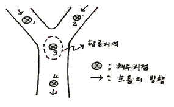

수산양식기사 (2017-08-26 기출문제)
1과목: 어류양식학
1. 무지개송어 치어 200kg을 방양하여 100일 동안 600kg로 성장하였다. 이 때 사료량이 800kg 일 경우 사료효율(%)은? (단, 폐사개체 없음)
- 83
- 17
- 66
- 50
(정답률: 89%)

2. 사료 성분 중 지방과 비타민류의 산화 방지를 위해 사용되는 항상화제가 아닌 것은?
- BHT
- 레시틴
- α-토코페롤
- α-녹말
(정답률: 89%)
3. 잉어의 성장 적수온은?
- 14 ~ 17℃
- 18 ~ 20℃
- 21 ~ 24℃
- 25 ~ 28℃
(정답률: 63%)
4. 잉어 양식에 대한 설명으로 옳은 것은?
- 가을철 수온이 내려가는 시기에 산란한다.
- 알은 부상성 점착란이다.
- 종묘생산 당해 연도에 최대 약 3cm 크기의 소형종묘 생산이 가능하다.
- 종묘생산 후 이듬해에 800 ~ 1000g의 식용어 생산이 가능하다.
(정답률: 61%)
5. Anguilla anguilla 의 원산지는?
- 일본
- 필리핀
- 인도
- 유럽
(정답률: 73%)
6. 엽색체공학기법으로 생산된 우량형질 개체의 해외 유출 방지를 위해 가장 중요하게 요구되는 기술은?
- 불임화
- 기형방지
- 성장증대
- 내병성 강화
(정답률: 75%)
7. 현재 인공종묘생산에 치어기의 먹이로 기수산 로티퍼를 사용하는 어종은?
- 연어
- 은어
- 송어
- 메기
(정답률: 61%)
8. 넙치 사육에서 수온에 따른 내용이 바르게 연결된 것은?
- 10℃ 이하 – 폐사
- 15 ~ 20℃ - 치어사육의 적수온
- 20 ~ 25℃ - 식욕감퇴
- 30℃ 이상 – 산란
(정답률: 88%)
9. 우리나라에 이스라엘 잉어(향어)가 도입된 년도는?
- 1955년
- 1963년
- 1973년
- 1982년
(정답률: 84%)
10. 배합사료의 장점에 대한 설명으로 틀린 것은?
- 관리와 공급이 쉽고, 자동 사료 공급기의 사용으로 인건비를 절약할 수 있다.
- 상온(20 ~ 25℃)에서 1년 이상의 장기 저장이 가능하다.
- 사료 공급량과 투여 방법을 조절함으로 생산량을 쉽게 조정해 나갈 수 있다.
- 생사료에 비하여 사료의 공급꽈 가격이 안정적이다.
(정답률: 82%)
11. 다음 중 실뱀장어의 소하가 가장 많을 때는?
- 대조 시의 일몰 때부터 2 ~ 3시간 이내에 만조가 될 때
- 저녁 때(밤)의 소조 시
- 낮부터 계속 비가 오는 날
- 북동풍이 불 때
(정답률: 90%)
12. 산란기 잉어 수컷의 성징이 아닌 것은?
- 체표가 거칠어진다.
- 가슴지느러미 가장자리 큰 줄기에 돌기가 많아진다.
- 꼬리지느러미의 크기가 작아진다.
- 몸이 단단해진다.
(정답률: 86%)
13. 조피볼락의 자어 사육시설 관리에 있어 자어의 안정을 유도하기 위한 수조의 표층 조도로 가장 알맞은 것은?
- 50 ~ 100 lx
- 150 ~ 200 lx
- 250 ~ 300 lx
- 300 ~ 350 lx
(정답률: 78%)
14. MS-222로 무지개송어를 마취시키려고 한다. 가장 적당한 농도는?
- 10 ~ 50ppm
- 100 ~ 150ppm
- 300 ~ 350ppm
- 400 ~ 450ppm
(정답률: 81%)
15. 넙치의 생물학적 최소형의 크기로 적절한 것은?
- 수컷 10cm, 암컷 30cm
- 수컷 20cm, 암컷 30cm
- 수컷 30cm, 암컷 40cm
- 수컷 45cm, 암컷 50cm
(정답률: 65%)
16. 비단잉어의 빨간색을 짙고 선명하게 하기 위해서 사용하는 색상사료의 원료 중 청록색 나선형의 남조류인 것은?
- Chlorella vulgaris
- Chaetoceros calcitrans
- Spirulina platensis
- Nannochloris oculata
(정답률: 71%)
17. 양식을 위한 자연산 방어 종묘의 선택으로 틀린 것은?
- 겉보기에 살이 쪄 있는 것을 선택한다.
- 먹이붙임이 쉬운 큰 종묘를 선택한다.
- 몸 빛깔은 황록색을 띠고 있는 것을 선택한다.
- 떼를 지어서 유영하는 것들을 선택한다.
(정답률: 58%)
18. 로티퍼의 생산을 감소시키는 원인생물이 아닌 것은?
- 에어로모나스 속
- 슈도모나스 속
- 유플로테스 속
- 우로네마 속
(정답률: 61%)
19. 돌돔 자치어의 설명으로 틀린 것은?
- 수온 21 ~ 22℃에서 수정 후 약 29 ~ 30 시간만에 부화한다.
- 부화 후 40일까지 효모와 클로렐라를 먹인다.
- 돌돔 난의 크기는 약 0.77 ~ 0.98mm 이다.
- 수온 20℃에서 부화 후 3일이 지나면 난황을 거의 흡수한다.
(정답률: 83%)
20. 산란기간 중에 암컷이 1회만 산란하는 종은?
- 참돔
- 넙치
- 금붕어
- 자주복
(정답률: 69%)
2과목: 무척추동물양식학
21. 다음 중 한류성 양식생물로 짝지어진 것은?
- 참소라 – 참가리비
- 참가리비 – 멍게(우렁쉥이)
- 대합(백합) - 멍게(우렁쉥이)
- 피조개 – 참소라
(정답률: 70%)
22. 양식생물과 부화유생의 연결이 틀린 것은?
- 닭새우 – 필로소마
- 성게 – 돌리올라리아
- 전복 – 담륜자
- 해삼 – 아우리쿨라리아
(정답률: 75%)
23. 먹이생물인 규조류의 배양속도를 현장에서 가장 편리하고 쉽게 측정할 수 있는 방법은?
- 침전부피 측정법
- 건조중량 측정법
- 세포수 산정법
- HPCL 측정법
(정답률: 64%)
24. 개량조개에 대한 설명으로 틀린 것은?
- 발생 시 해수비중이 1.022 ~ 1.024 정도가 좋다.
- 치패의 이식 장소는 간출시간이 긴 만조선 부근이 좋다.
- 종묘의 방양은 3 ~ 4월경이 좋다.
- 채취시기는 12월에서 익년 4월경이 좋다.
(정답률: 70%)
25. 식물플랑크톤의 실내 배양조건으로 틀린 것은?
- 과도한 CO2공급은 배양수의 산성화를 초래할 수 있다.
- 배양을 유지하기 위해 첨가해야 할 주영양염은 Cu, Mn, Co 등이다.
- 광원은 형광등, 메탈하이라이트 등의 인공조명을 이용한다.
- 일반적으로 시험관 또는 삼각 플라스크에서 배양할 때의 조도는 1000 lx 정도면 적당하다.
(정답률: 78%)
26. 참소라의 산란 성기 수온은?
- 10 ~ 11℃
- 15 ~ 16℃
- 23 ~ 24℃
- 27 ~ 28℃
(정답률: 48%)
27. 참담치의 인공종묘에 대한 내용으로 적합하지 않은 것은?
- 암수 성비를 고려하여 큰 개체, 작은개체를 충분히 확보한다.
- 채란용 모패는 수온이 6℃ 내외의 순환해수에 수용한다.
- 수정이 끝나면 여분의 정자 및 이물질을 제거하고, 수정란을 여과해수로 깨끗이 씻는다.
- 부화 후 7일째부터 먹이를 공급한다.
(정답률: 55%)
28. 키조개 양식에 관한 설명으로 틀린 것은?
- 치패는 간출선 전후해서 모래질이 50 ~ 80% 인 곳에 많다.
- 바닥에 착생한 치패를 이식, 관리할 경우에는 m2당 100개체 이하로 하는 것이 좋다.
- 간조선 근처 사니질에 종묘를 균일하게 뿌려 양성한다.
- 간석지 양성인 경우, 해적구제 외에 간출 시 잡물을 제거한다.
(정답률: 64%)
29. 패류가 부유생활을 끝내고 저서생활로 들어가는 유생단계는?
- 담륜자 유생
- D상 유생
- 소형각정기 유생
- 성숙 유생
(정답률: 45%)
30. 단련종굴의 장점이 아닌 것은?
- 환경변화에 대한 저항력이 강하다.
- 탈락되는 치패수가 적다.
- 양성기간이 짧다.
- 크기가 커서 취급이 쉽다.
(정답률: 80%)
31. 대하가 우리나라 서해의 산란장에 도달하는 시기는?
- 2 ~ 3월
- 4 ~ 5월
- 7 ~ 8월
- 10 ~ 12월
(정답률: 62%)
32. 굴 부착치패에 대한 설명으로 틀린 것은?
- 후기 채묘분은 채묘한 다음 약 2주일이 지나면 곧 단련상으로 옮겨 단련시킨다.
- 종굴 부착상태는 채묘기의 위쪽 면에만 균일하게 붙어 있는 것이 좋다.
- 전기 채묘분도 후기 채묘분처럼 단련시켜 단련종굴로 쓸 수 있다.
- 단련종굴은 폐사율이 낮고 발육이 좋아 양성기간이 짧다.
(정답률: 75%)
33. 다음 중 전복의 자원 조성을 위한 관리방법에서 가장 효과가 있는 것은?
- 투석
- 정지
- 객토
- 갈이
(정답률: 68%)
34. 비 단련종굴의 채묘 이후 본 수하까지의 소요 기간은?
- 1개월
- 3개월
- 6개월
- 9개월
(정답률: 59%)
35. 전복의 종묘 수송방법에 대한 설명으로 옳지 않는 것은?
- 일반적으로 공기 중에 노출시킨 채 수송한다.
- 기온이 낮을수록 생존율이 높지만 영하의 날씨에는 수송이 불가능하다.
- 수송용기에 해조류를 깐 다음 치패를 해조류에 붙여 수송한다.
- 수송용기는 습도와 보온이 유지되어야 한다.
(정답률: 57%)
36. 키조개에 대한 설명으로 틀린 것은?
- 산란 성기는 6월 하순부터 8월 상순까지이다.
- 성숙 부유 유생의 크기는 각고 0.135mm, 각장 0.144mm로 작은 편이다.
- 주로 패주(폐각근)가 식부위로 선호된다.
- 종묘의 방양시기는 3 ~ 5월 사이가 가장 적합하다.
(정답률: 77%)
37. 로프(간승)의 길이가 100m이고 뜸통의 간격이 4m인 로프 양성시설을 5대 설치하는 필요한 뜸통의 총수는?(오류 신고가 접수된 문제입니다. 반드시 정답과 해설을 확인하시기 바랍니다.)
- 95개
- 100개
- 125개
- 130개
(정답률: 52%)
38. 보리새우와 대하의 교미행동에 대한 설명으로 옳은 것은?
- 보리새우와 대하 모두 교미한 그해 산란을 마친다.
- 보리새우는 교미를 여러 번 하지만 대하는 한 번만 한다.
- 교미 후 보리새우는 교미전이 없지만, 대하는 교미전을 가지고 있다.
- 대하는 교미 후 바로 알을 수정하여 발생시킨다.
(정답률: 62%)
39. 양성과정 중 이동성이 가장 큰 이매패류는?
- 대합
- 고막
- 우럭
- 개량조개
(정답률: 74%)
40. 참소라의 방류 양성에 관한 내용으로 옳은 것은?
- 성장하면서 차차 얕은 곳으로 이동한다.
- 일반적으로 수온 13℃ 이하인 상태가 오래 지속되면 성장 휴지대가 만들어진다.
- 적정 성장 수온이 장기간 유지되는 곳은 먹이조달이 충분하지 못해 피해야 한다.
- 종묘의 방류량은 적어야 그 효과가 크다.
(정답률: 75%)
3과목: 해조류양식학
41. 다음 중 미역 초기배양에서 배우체의 비료주기에 대한 내용으로 가장 적합한 것은?
- 배우체가 건강할 경우에도 비료주기는 반드시 필요하다.
- 비료는 해수 1L에 질산나트륨 0.02g, 제2인산나트륨 0.1g을 첨가한다,
- 수조에 약품을 직접 넣거나 한꺼번에 너무 많이 주면 오히려 약해가 있다.
- 물갈이 전에 약품을 처리하여야 한다.
(정답률: 70%)
42. 김의 조가비 사상체에 각포자낭 형성이 시작되는 시기는?
- 3 ~ 4월
- 5 ~ 6월
- 7 ~ 8월
- 9 ~ 10월
(정답률: 37%)
43. 양식 김 자리바꿈의 주된 원인은?
- 유아의 영양번식력 차이
- 유성생식의 유무
- 무성생식의 유무
- 성엽의 생식기간 차이
(정답률: 76%)
44. 다시마의 포자낭 형성에 대한 설명으로 틀린 것은?
- 포자낭은 표층 세포에 형성된다.
- 포자낭이 형성된 부분은 약간 함몰된다.
- 포자낭반은 잎의 양면에 형성된다.
- 포자낭반은 색이 짙어서 육안으로 식별된다.
(정답률: 60%)
45. 자연산 유용 해조류의 증식방법과 거리가 먼 것은?
- 투석
- 암반폭파
- 객토
- 갯닦기
(정답률: 47%)
46. 김 유리 사상체 배양에 대한 내용으로 틀린 것은?
- 매년 과포자를 구할 필요가 없다.
- 선발육종을 간단하게 할 수 있다.
- 배양을 위한 넓은 장소가 필요하다.
- 규조 및 병의 침해가 적다.
(정답률: 67%)
47. 미역의 생활사에서 식용으로 하는 시기는?
- 배우체
- 포자체
- 웅성체
- 자성체
(정답률: 59%)
48. 다음 중 김 유리 사상체의 영양생장만을 위한 조건으로 가장 적합한 것은?
- 13 ~ 14시간 명기, 수온 25℃ 이하
- 8 ~ 10시간 명기, 수온 25℃ 이하
- 연속조명, 수온 10℃
- 암흑처리, 수온 10℃
(정답률: 56%)
49. 김 양식장의 해적생물로 부착성 규조류인 것은?
- Licmophora
- Ceinina
- Hydrozoa
- Bryozoa
(정답률: 45%)
50. 풀가사리의 착생과 생장에 가장 적합한 노출수위는?
- 무노출선
- 2시간 노출선
- 4시간 노출선
- 8시간 노출선
(정답률: 53%)
51. 냉동발의 입고 시 김 엽체의 수분 함유율로 가장 적합한 정도는?
- 8 ~ 10%
- 20 ~ 40%
- 40 ~ 60%
- 60 ~ 80%
(정답률: 80%)
52. 청각 후기양성 시 수심별 생장도 및 양성효과를 비교할 때 가장 좋은 수심은?
- 1m
- 2m
- 3m
- 4m
(정답률: 45%)
53. 다시마 양식방법 중 경제성 및 기술상 문제로 우리나라에 적합하지 않은 것은?
- 촉성종묘배양에 의한 1년 양식
- 억제종묘배양에 의한 1년 양식
- 고온 적응 품종에 의한 양식
- 2년 양식
(정답률: 69%)
54. 김의 분류 기준이 될 수 없는 것은?
- 엽체 가장자리 톱니의 유무
- 세대 교번의 유무
- 생식 세포의 분열 양식
- 자웅성
(정답률: 57%)
55. 김 양식장의 수온과 생장과의 관계로 틀린 것은?
- 해수온도 15 ~ 23℃는 김채묘와 발아기간에 해당된다.
- 0.5 ~ 1.5cm 정도의 유엽은 5 ~ 7℃에서 가장 잘 자란다.
- 기온이 –2℃ 이하로 하강하면 노출된 김은 동해를 받기 쉽다.
- 김 양식의 종말기 수온이 15℃가 되면 생산이 한계에 도달한다.
(정답률: 38%)
56. 양식법이 주로 영양번식에 의존하는 것은?
- 미역
- 다시마
- 김
- 톳
(정답률: 63%)
57. 김의 생장온도에 과한 내용으로 틀린 것은?
- 발아기 적온: 15 ~ 22℃
- 생장기 적온: 5 ~ 8℃
- 생장기 하한: 4℃ 전후
- 말기 적온: 15℃ 전후
(정답률: 40%)
58. 미역의 가이식 시 나타나는 싹녹음의 주원인은?
- 수질오염
- 영양염 결핍
- 외양수 유입
- 잡생물 부착
(정답률: 79%)
59. 다음 중 서해연안에 가장 적당하다고 생각되는 미역 양성시설방법은?
- 전부동 그물발식
- 수평 외줄 연승식
- 뗏목식
- 조립연승식
(정답률: 71%)
60. 매생이에 대한 설명으로 틀린 것은?(오류 신고가 접수된 문제입니다. 반드시 정답과 해설을 확인하시기 바랍니다.)
- 일반적으로 매생이 접합자의 발아 및 생장은 저온, 저광량의 조건하에서 빠르게 나타난다.
- 갈파래목 갈파래과 매생이 속에 속하는 녹조식물이다.
- 유성생식뿐만 아니라 단위생식도 이루어진다.
- 육상 인공채묘시 유주자 방출은 냉동보관하는 모조의 함수율보다는 성숙상태에 따라 달라진다.
(정답률: 44%)
4과목: 양식장환경
61. 다음 적종생물 중 규조류에 속하는 것은?
- Gymnodinium 속
- Prorocentrum 속
- Noctiluca 속
- Skeletonema 속
(정답률: 57%)
62. 호수의 부영양화(entrophication)란?
- 호수의 대장균의 수가 증가하는 현상
- 호수의 수질이 향상되는 현상
- 호수의 무기물이 감소하는 현상
- 호수의 영양 염류 함유량이 증가하는 현상
(정답률: 80%)
63. 식물성 플랑크톤이 진하게 발생한 노지 양어지에서 여름철 해 뜰 무렵에서 맑은 날 오후의 일반적인 pH 변화는?
- pH가 높아진다.
- pH가 낮아진다.
- 변화가 없다
- pH가 낮아졌다가 높아진다.
(정답률: 72%)
64. 공기양수기(air lift)에 관한 내용이 바르게 설명된 것은?
- 침수율이 클수록 양수 능력이 낮다.
- 침수부의 깊이가 작을 때는 공기압축기(air compressor)를 써야한다.
- 실용적인 최소 침수율은 80% 정도이다.
- 이 장치는 에어레이션(aeration)의 효과를 내지 않는다.
(정답률: 68%)
65. 일반적인 물속에서의 동물의 산소소비에 대한 설명으로 틀린 것은?
- 동물의 산소소비는 온도가 상승함에 따라 증가한다.
- 동물 개체 당 산소소비량은 큰 개체일수록 많다.
- 단위체중 당 산소소비량은 대형으로 성장할수록 많다.
- 먹이를 소화하는 동안은 더 많은 산소를 소비한다.
(정답률: 70%)
66. 해수의 비중을 비중계로 측정할 때 동시에 함께 측정하여야 하는 것은?
- 탁도
- 수온
- 플랑크톤량
- 용존산소량
(정답률: 76%)
67. 다음 중 물 속에 살고 있는 동물에게 강한 독성물질로 해를 끼치는 무기질소의 상태는?
- NH4+
- NH3
- NO2
- NO3
(정답률: 62%)
68. 정수시 양어지에 인위적으로 산소공급을 해야 할 때 하루 중 산소 공급이 가장 필요한 시간은?(오류 신고가 접수된 문제입니다. 반드시 정답과 해설을 확인하시기 바랍니다.)
- 해지기 직전
- 해가 진 직후
- 해뜨기 직전
- 해가 뜬 후 오전
(정답률: 74%)
69. 정수용 여과재인 활성탄의 주 기능은?
- 이온교환
- 흡착
- 침전
- 응집
(정답률: 77%)
70. 양식용수로 사용되는 지하수의 일반적인 특징과 거리가 가장 먼 것은?
- 연중 수온이 고르다.
- 용존산소가 풍부하다.
- 화학적 오염의 우려가 적다.
- 해적 생물의 유입이 적다.
(정답률: 68%)
71. 수중의 질산화 반응에 관한 내용이 옳지 않은 것은?
- 순환여과식 양식장의 수질정화에서 주로 이용되는 원리이다,
- 대표적 질산화 박테리아는 Nitrosomonas sp.와 Nitrobacter sp. 이다.
- 질산 유기화합물이 암모니아로 바뀌는 과정이다.
- 생물학적 여과에 속한다.
(정답률: 82%)
72. 해수의 질산염 측정 시 사용하는 환원제는?
- 설파닐산
- 아미노프톨술폰산
- 카드뮴
- 주석
(정답률: 79%)
73. 윙클러법으로 용존산소 분석 시 사용되는 지시약의 주성분은?
- 티오황산나트륨
- 녹말
- 탄산마그네슘
- 염화망간
(정답률: 60%)
74. 활성오니법 처리에 대한 설명이 옳지 않은 것은?
- 사육조와 활성오니 반응조를 겸하는 경우가 일반적이다.
- 양어지 속에서 활성오니가 잘 성장하기 위해서는 태양 광선이 필요하다.
- 수심이 깊어야 수량이 많아져서 질산화세균이 부유하는데 유리하다.
- 활성오니 생물을 현탁시키기 위해서는 강한 에어레이션을 쉬지 않고 계속해야 한다.
(정답률: 72%)
75. 다음의 각 지점에서 채수를 하고자 한다. 채수 지점으로 가장 적합하지 않는 곳은?

- 1지점
- 2 지점
- 3지점
- 4지점
(정답률: 81%)
76. 틸라피아 양식에서 수심이 70 ~ 100cm 또는 그 이상일 때의 바닥 경사율로 적합한 것은?
- 0.5 ~ 1%
- 5 ~ 10%
- 15 ~ 20%
- 25 ~ 30%
(정답률: 58%)
77. 담수에서 부족하기 쉬워 제한요인으로 작용하는 영양염류는?
- 질소, 인, 칼륨
- 질소, 인, 규산
- 규산, 칼륨, 칼슘
- 인, 칼슘, 칼륨
(정답률: 59%)
78. 수질 조사법에 관한 설명으로 옳은 것은?
- BOD는 시수 중에 있는 유기물을 호기성 미생물이 분해, 산화할 때 소비하는 산소량이다.
- COD는 시수 중에 무기물이 화학물질에 의해 환원될 때 소비되는 산소량이다.
- 경도의 측정에는 시수 중에 칼륨이온과 나트륨이온의 총량을 염화칼슘의 양으로 환산하는 방법이 있다.
- pH 비색 측정법 중 지시약 BTB는 산성 쪽으로 청색을 나타낸다.
(정답률: 64%)
79. 다음 양식업 중 신고어업에 해당하는 것은?
- 해조류양식업
- 복합양식업
- 외해양식업
- 육상종묘생산업
(정답률: 63%)
80. pH 5인 수계는 pH 7인 수계보다 몇 배 더 산성인가?
- 1배
- 10배
- 100배
- 1000배
(정답률: 87%)
5과목: 수산질병학
81. 닻벌레병에 관한 설명으로 옳은 것은?
- 감염어는 몸을 양식장 바닥이나 벽에 비비기 때문에 궤양이 생길 수 있다.
- 암컷과 수컷이 교미한 후, 수컷만이 기생하며 암컷은 산란 후 죽는다.
- 안테나가 변형된 집게를 사용하여 어류의 아가미에 기생한다.
- 해산어의 근육에 닻벌레 몸의 앞부분을 침투시켜 기생하는 질병이다.
(정답률: 67%)
82. 신장과 간, 비장에 백점 및 백색 결절의 병소를 형성하는 질병이 아닌 것은?
- Bacterial Kidney Disease(BKD)
- Pseudotuberculosis
- Ichthyophonus 증
- Streptococcisis
(정답률: 52%)
83. 넙치가 안구돌출과 아가미뚜껑 내부에 출혈을 보이는 이유로 가장 적합한 것은?
- Myxobolus sp.의 기생
- Streptococcus sp.의 감염
- 장내 흡충류의 기생
- Pseudodacylogyrus sp.의 기생
(정답률: 63%)
84. 어류의 바이러스 감염증과 각각의 외관 증상 또는 병리학적 변화가 알맞게 연결되지 않은 것은?
- 무지개송어의 전염성 췌장 괴사증 – 체색흑화, 복부 팽만, 흰색의 점액변
- 넙치의 랍도바이러스감염증 – 근육 내 출혈, 복부 팽만
- 잉어의 허피스바이러스성 유두종 – 만성, 양성의 표피세포 증생
- 방어의 바이러스성 복수증 – 망막 및 신경세포의 괴사
(정답률: 67%)
85. 3대충이라는 별명을 갖고 있는 태생 흡충은?
- Gyrodactylus
- Bivagina
- Benedenia
- Heteraxine
(정답률: 54%)
86. 무지개송어 등의 어류에서 척추만곡증이 나타나는 것은 어떤 영양소가 부족하여 일어나는 병인가?
- 비타민 A
- 비타민 B2
- 비타민 C
- Fe
(정답률: 48%)
87. 다음 중 김 양식기간에 발생하는 갯병으로 병원균에 의한 것은?
- 흰갯병
- 싹갯병
- 붉은갯병
- 암종병
(정답률: 67%)
88. 에드워병에 관한 설명으로 옳지 않는 것은?
- 넙치 및 뱀장어에서 주로 볼 수 있으며, 타 어종에서도 드물게 관찰할 수 있다.
- 원인세균은 Edwardsiella ictaluri 로 SS한천배지에 배양하였을 때 특징적인 흑색집락을 형성한다.
- 뱀장어에 개복하였을 때 신장 및 간장의 농양을 볼 수 있으며, 넙치에서는 복수저류에 의한 복부팽만과 탈장을 들 수 있다.
- 어체를 개복하면 특징적인 악취가 나는데 이는 원인세균이 생성하는 황화수소(H2S)에 의한 것이다.
(정답률: 48%)
89. 무지개송어에서 전염성조혈기괴사증(IHN)이 주로 나타나는 시기는?
- 부화후 ~ 8주된 치어
- 6개월 정도의 치어
- 1년어
- 2년어
(정답률: 60%)
90. 기수지역의 뱀장어 양식장에서 잘 발생하며 온몸의 표면에 바늘로 찌른 것과 같은 점상의 출혈이 다수 관찰되는 질병의 원인균은?
- Edwardsiella ictaluri
- Pseudomonas anguilliseptica
- Pseudomonas fluorescens
- Aeromonas salmonicida
(정답률: 70%)
91. 세균의 그람 염색성이 양성과 음성으로 나누어지는 원인 세균의 어느 부분의 차이에서 기인하는가?
- 핵
- 세포질
- 세포벽
- 편모
(정답률: 78%)
92. 다음 어류질병 중 폐사율은 낮으나 감염어의 상품가치를 떨어뜨려 경제적인 손실을 주는 질병은?
- 림포시스티스병
- 바이러스성 상피증생증
- 전염성조혈기괴사증
- 채널메기바이러스병
(정답률: 58%)
93. 뱀장어의 아가미가 전면에 걸쳐 초콜릿색으로 변하였다면 그 원인으로 가장 적합한 것은?
- 아가미 부식병
- 아가미 흡충 기생
- 수중에 염분 출현
- Methaemoglobin 증
(정답률: 60%)
94. 어류의 체표나 아가미에 기생하지 않는 병원성 기생충은?
- Trichodina sp.
- Chilodonella sp.
- Ichtybodo sp.
- Hexamita sp.
(정답률: 57%)
95. 뱀장어가 적점병에 걸리면 출혈반점이 어느 부위에 나타나는가?
- 근육층
- 비늘낭속
- 안구
- 피하조직
(정답률: 59%)
96. 뱀장어 기적병의 증상이 아닌 것은?
- 죽은 어체를 모아서 보면 악취가 나고, 항문이 확대, 돌출되어 있고 그 가장자리가 종창되어 있다.
- 가슴지느러미, 꼬리지느러미, 복부 피부, 항문 등이 붉게 변한다.
- 장에 박리성 카다르성염이 생긴다.
- 간은 강한 울혈을 일으키고 암적색을 디며 간세포는 지방변성을 일으키는 경우가 많다.
(정답률: 37%)
97. 급성구구부종병(Acute peristome edema disease)과 관련 없는 것은?
- 입 주면 함몰구에 최초로 부종이 생긴다.
- 감염해삼의 80% 이상이 내장을 토출한다.
- 감염 5~6일이 경과하면 감염해삼의 90% 이상이 폐사한다.
- 이 병은 대부분 기생충과 세균의 혼합감염에 의해 발생빈도가 높다.
(정답률: 53%)
98. 김의 붉은갯병이 발생하는 주요인은?
- 저수온과 고비중
- 고수온과 저비중
- 고노출과 저수온
- 해양오염
(정답률: 60%)
99. 전염성조혈기괴사증(IHN)의 특징적인 증상이 아닌 것은?
- 실모양의 점액변이 항문에 붙어 있다.
- 복부가 팽만된다.
- 콩팥 전반에 걸쳐 점상 출혈이 나타난다.
- 몸 색깔이 변하지 않는다.
(정답률: 63%)
100. 균사에 의해 은어의 피부조직이 파괴되고 육아종을 형성하는 진균성 육아종의 원인생물은?
- Candida salmonicola
- Ichthyophonus hoferi
- Saprolegnia parasitica
- Apanomyces piscicida
(정답률: 54%)